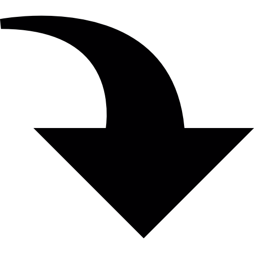

Proces inscriere
Trebuie să evidențiem că procesul de înscriere prin platforma AdmitereOnline.ro se derulează 100% online până în momentul în care candidații sunt declarați admiși și trebuie să trimită spre universitate documentele originale în vederea înmatriculării ca studenți. Candidații care trebuie să susțină examen (dacă este cazul) se vor deplasa la universitate in ziua examenului, procesul de înscriere online neînlocuind această etapă.
Spre deosebire de modalitatea de înscriere tradițională sau procesele de pre-înscriere online întâlnite la alte universități,
- NU trebuie să te deplasezi la secretariatele universității, pierzând timp și cheltuind bani pe transport (eventual cazare și masă)
- NU trebuie să stai la coadă și să alergi de la ghișeu la casierie și înapoi
- NU trebuie să faci zeci de copii legalizate (câte un set pentru fiecare facultate)
Etapele procesului de înscriere
- TU - Îți creezi un cont de utilizator și completezi datele cerute
- TU - Plătești taxa de înscriere și taxa de procesare a înscrierii online
- UNIVERSITATEA - Preia înscrierile, analizează dosarul. Dacă e nevoie, TU completezi documentația
- UNIVERSITATEA – Organizează procesul de selecție (cu examen, dacă e cazul) și decide pe cine admite
- TU - Mergi la facultate și te înmatriculezi ca student
Sfârșit admitere

Începi viața de student

Dacă vrei amănunte despre fiecare etapă de AdmitereOnline, poți citi mai departe...
| Etapa | Status aplicatie | |
|---|---|---|
| 1 | TU - Îți creezi un cont de utilizator și completezi datele cerute
Ai nevoie doar de o adresă de email și de CNP (Cod Numeric Personal). Poți să începi chiar acum!Câmpurile sunt aceleași ca pe formularul fizic pe care l-ai completa la ghișeu pentru că sunt informații solicitate de către Ministerul Educației. |
Dosar în curs de completare
↓
Dosar completat cu taxa încă neplătită
|
| 2 |
TU - Plătești taxa de înscriere și taxa de procesare a înscrierii online
Plătești taxele folosind una dintre cele 3 opțiuni: cu cardul, prin virament bancar sau prin depunere numerar la orice sucursală BRD. |
Dosar cu taxa plătită |
| 3 |
UNIVERSITATEA - Preia înscrierile, analizează dosarul. Dacă e nevoie,
TU completezi documentația
Dosarul este atent analizat de către reprezentații universităților la care te-ai înscris. Verificarea aplicației poate să dureze maxim 24 de ore, dar se va întâmpla cât de repede posibil. În cadrul acestui pas se verifică dacă au fost încărcate toate informațiile și documentele solicitate de către universitate. Dacă se depistează vreo neconcordanță facem toate eforturile să luăm legătura cu tine (la emailul și telefonul pe care ni le-ai spus când ți-ai făcut contul). Odată ce toate informațiile sunt verificate, dosarul tău de înscriere este sincronizat electronic cu baza de date a universității. |
Aplicație acceptată de universitate
<sau>
Aplicatie condiționată de completări
sau corecții ale dosarului
|
| 4 |
UNIVERSITATEA – Organizează procesul de selecție (cu examen, dacă e cazul)
Universitatea decide pe cine admite. Odată ce rezultatele de ADMIS / RESPINS sunt anunțate, noi te vom contacta prin email pentru a-ți oferi informațiile necesare cu privire la înmatriculare (când are loc, ce documente trebuie să depui etc). |
Candidat ADMIS
(condiționat de validarea
documentelor originale)
< >
Candidat RESPINS de universitate
|
| 5 |
TU - Mergi la facultate și te înmatriculezi ca student
Din acest moment vei ține legătura direct cu universitatea. La înmatriculare vei prezenta și valida documentele originale. ATENȚIE: eventualele neconcordanțe între datele completate în aplicația online și cele care reies din documentele originale pot să conducă la descalificarea candidatului și respingerea înmatriculării. |
Candidat ÎNMATRICULAT
(dacă documentele originale
au fost validate)
< SAU >
Candidat RESPINS
(dacă sunt neconcordanțe grave
între documentele originale și
datele completate în aplicația online)
|
După ce te înmatriculezi devii Student cu acte în regulă. Well Done!
Ești gata să începi?